Learning Objectives
After completing this lesson, you’ll be able to:
- Configure a Manual Trigger in an Automation
- Create an Automation App.
- Trigger an Automation from an App.
Resources
- Starting FME Flow project
- C:\FMEData\Workspaces\AutomateWorkflows\exercise-build-an-automation-app.fsproject
- example.geojson (a GeoJSON file of earthquake locations. This file can be used in the unlikely event the USGS Earthquake API goes down)
- C:\FMEData\Resources\CreateDataIntegrationApps\example.geojson
- Seismograph.jpg
- C:\FMEData\Resources\FlowAuthoring\FlowApps\Seismograph.jpg
- Complete FME Flow project
- C:\FMEData\Workspaces\AutomateWorkflows\exercise-build-an-automation-app-complete.fsproject
Introduction
You have built an automation that runs daily to create 3D visualizations of recent earthquakes. However, you've now realized that it doesn't need to run daily and only needs to be run when someone requests the data. Sometimes the update will need to be done multiple times a day, and other times it doesn't need to be updated for a few weeks at a time. Since not everyone who may request the updated data is familiar with FME Flow Automations, you're going to setup an Automation App to allow them to trigger the automation.
1) Open Earthquake Automation
Download the starting project and import it to your FME Flow. The project contains an Earthquake Automation. Open the automation once you have imported it.

If you're continuing from the Build a Basic Automation exercise where you built and saved an Earthquake Automation, this exercise will build off of that automation so you can continue from it by swapping the FME Flow Schedule trigger to a Manual Trigger.
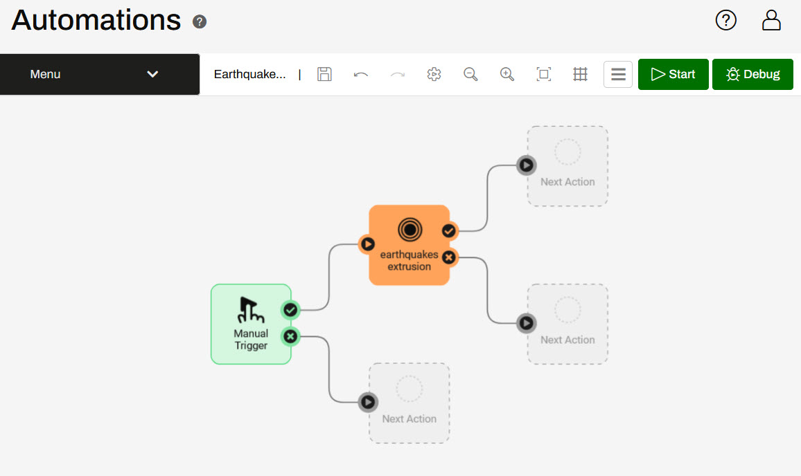
2) Open the Manual Trigger Details
Automation Apps require a Manual Trigger to use the automation. Click on the Manual Trigger icon to open its Details. Under Parameters, disable the Prompt for JSON on Trigger.
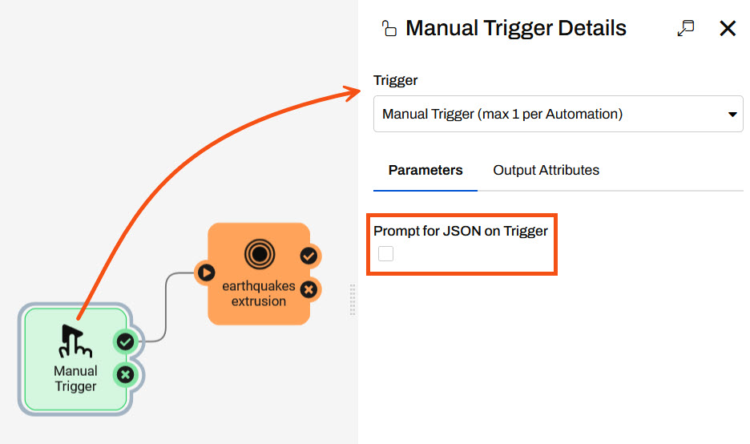
3) Create a Manual Parameter
Under Output Attributes, you will add a Manual Parameter to receive input from the Automation App. Expand the Success section and click Manage beside Manual Parameters. The Manual Parameters Editor will open.
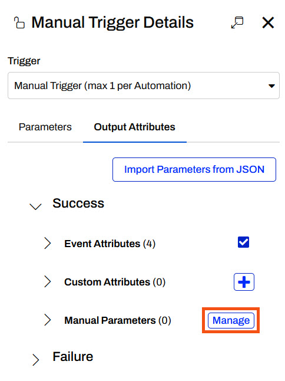
In the Manual Parameters Editor, click the + button to add a parameter and select File/URL.
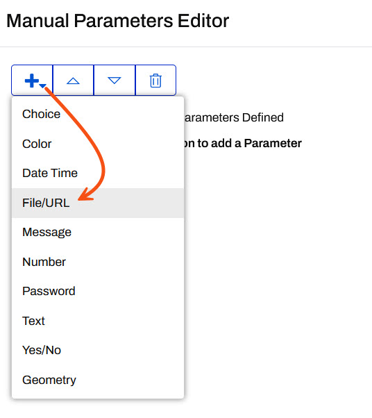
Configure the parameter settings to match the image below, leaving the Default Value blank for now.
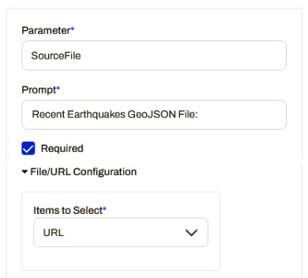
Click Save to close the Manual Parameters Editor, then click Apply to close the Manual Trigger Details.
4) Link the Parameter
Open the Workspace Action Details and scroll down to the Source GeoJSON File or URL parameter. Click the arrow, expand Manual Parameters and select the manual.SourceFile parameter.
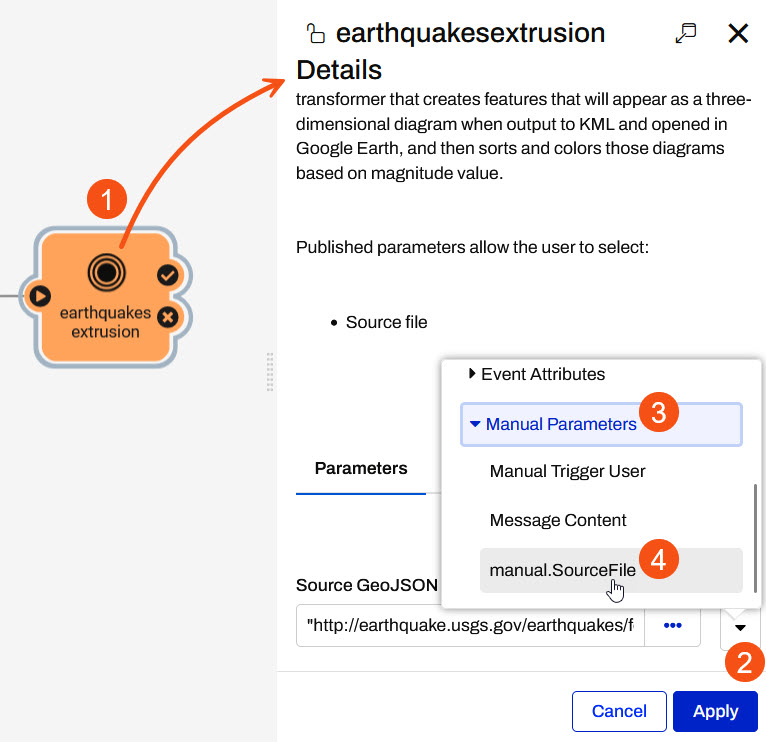
Once the parameter is linked, click Apply to close the Action Details.
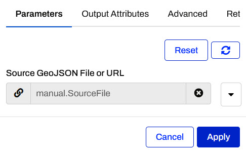
5) Save the Automation
Save the Automation from the top toolbar of the Automation canvas.
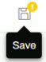
6) Create Automation App
Open the Flow Apps menu and select Create Automation App.
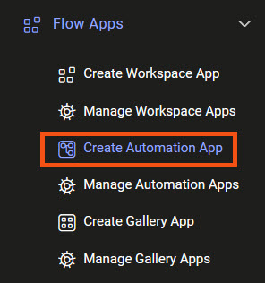
Give your App a name, title, and description. Select Earthquake Automation as the automation that is triggered by the App.
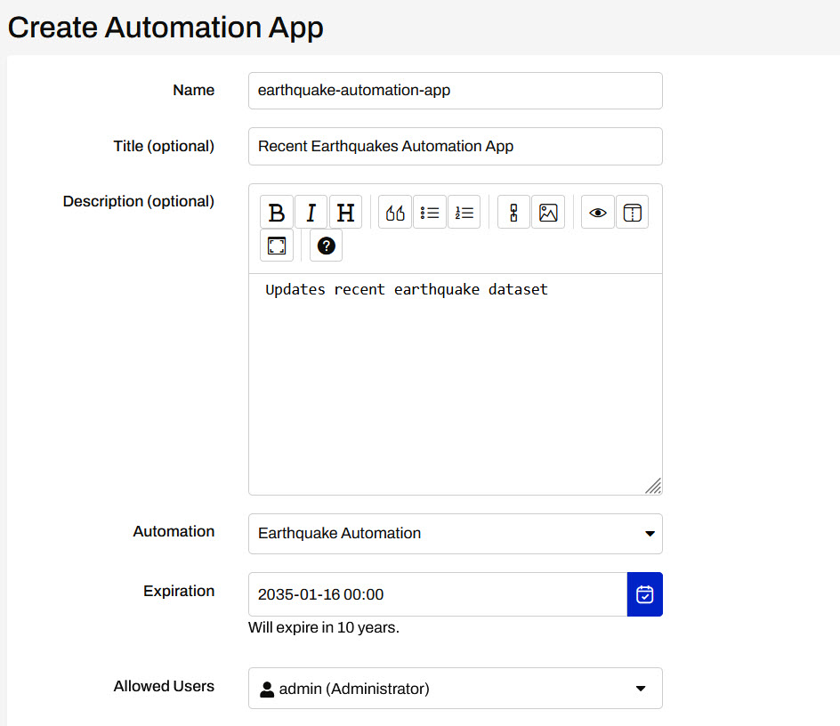
When you expand Parameters, you will see the Manual Parameter we created in the Manual Trigger.
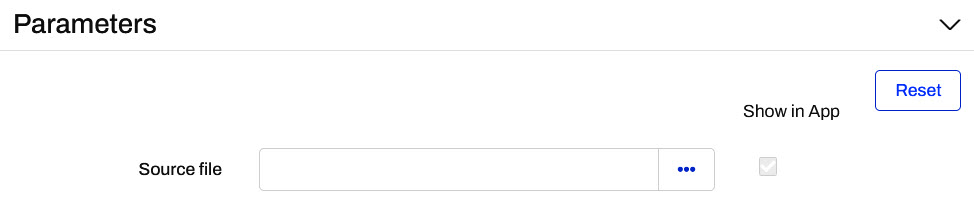
8) Customize Automation App
In the Customize section, Automation Apps can be customized similarly to Workspace Apps. Optionally, download the Seismograph.jpg and add it as the Heading Banner.
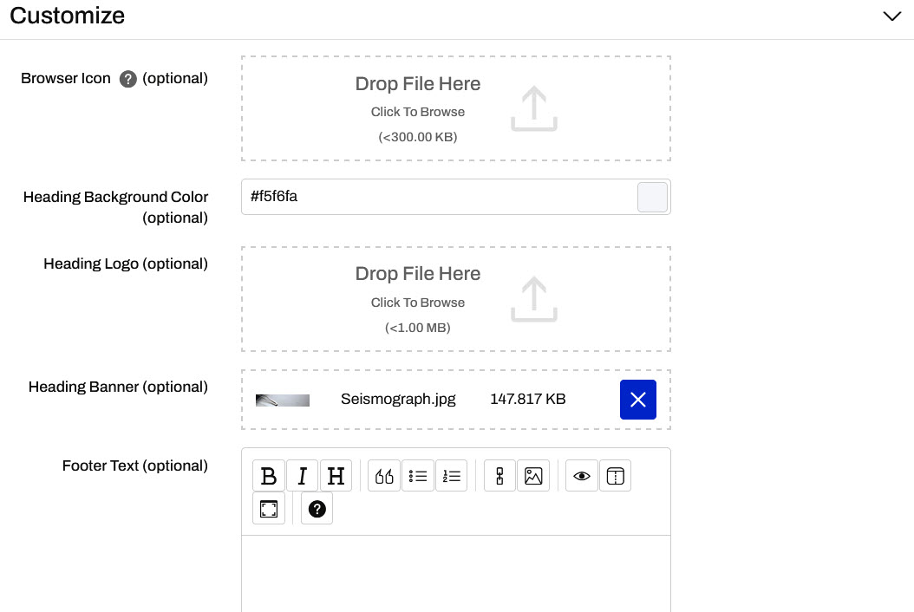
Click OK to finish creating the App.
9) Open the App
After you click OK to create and save the Automation App, you'll see the App URL. Click it to open the App, or copy it to share with others.
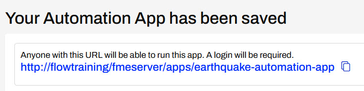
However, once you open your app, you'll see that this app is disabled.
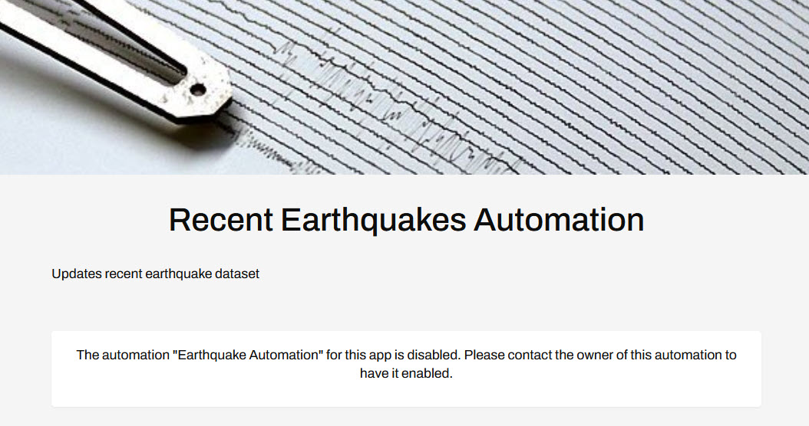
The app is disabled because the Automation has not been started.
10) Return to the Automation
Navigate back to your Earthquake Automation on FME Flow. Before you start the automation, add a new Internal Action connected to the earthquakes extrusion success port. The main advantage of Automation Apps over Workspace Apps is the ability to run multiple workspaces and perform additional actions. While you could add an action to send an email or run another workspace, for now, you will log a message containing some information about running the Automation App.
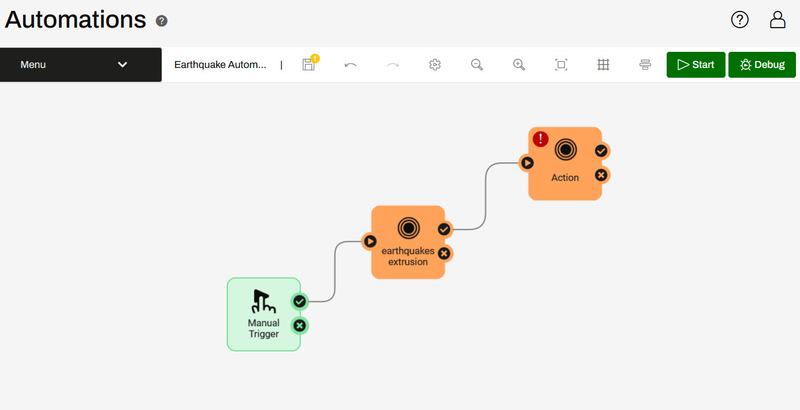
Open the Details for the new action. Configure the action to Log a Message. For the Formatted Message, open the Text Editor.
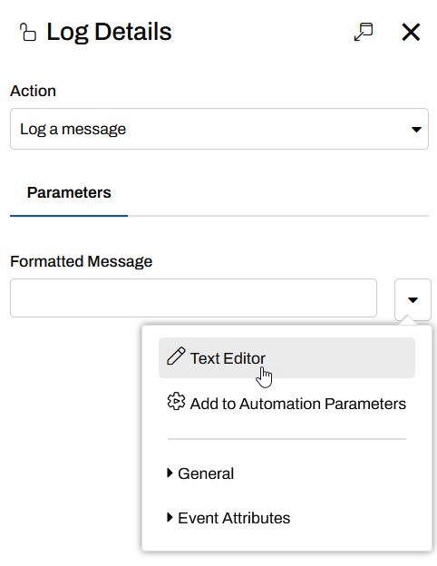
On the left panel of the Text Editor, you will see parameters from the Automation App added to the list of Automation Parameters. Configure a message using the parameters:
The {automation.name} was triggered from the {app.name} by {app.user}.
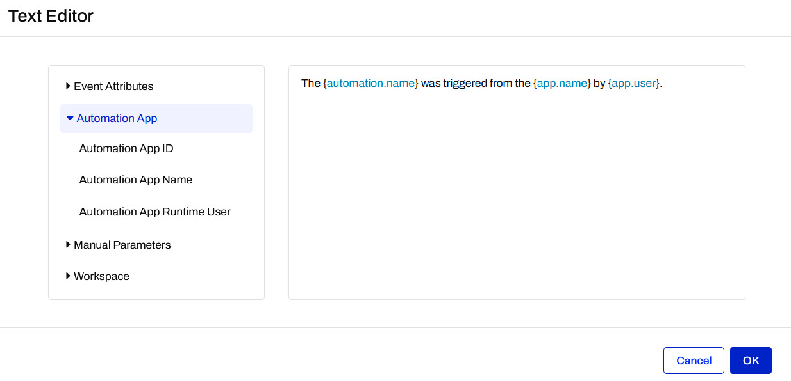
Although this logs a message, you can use the Text Editor and these parameters in other Actions, such as configuring an email body to send the same message.
Click OK to close the Text Editor and then click Apply to close the Log Details.
If you trigger the Automation manually from within the Automation, not using the Automation App, the Automation App parameters will not populate and the message returned will be: The Earthquake Automation was triggered from the {app.name} by {app.user}.
11) Save and Start the Automation
Save the updates you just made to the automation and then Start the automation in Production Mode.
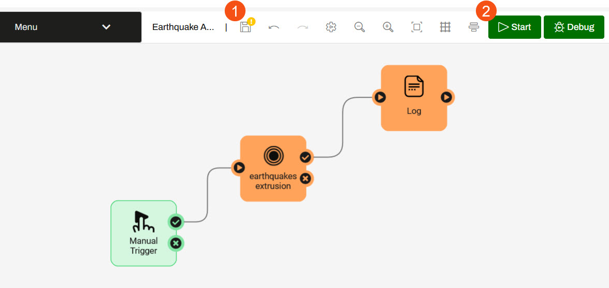
12) Open and View the Automation App
Return to the list of Automation Apps on your FME Flow and open your Earthquake Automation App.
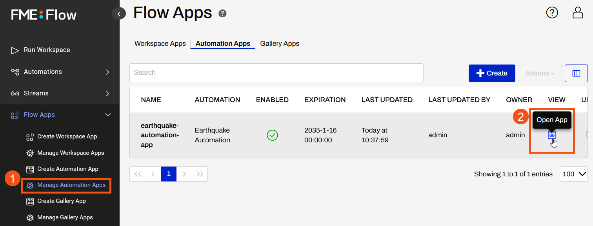
Once you open the App, the Run button will be disabled until a value is provided for the Source file parameter since it was set to be required when you created the Manual Parameter in Step 3.
For the Source File, paste the USGS Earthquakes API URL: http://earthquake.usgs.gov/earthquakes/feed/v1.0/summary/2.5_week.geojson.
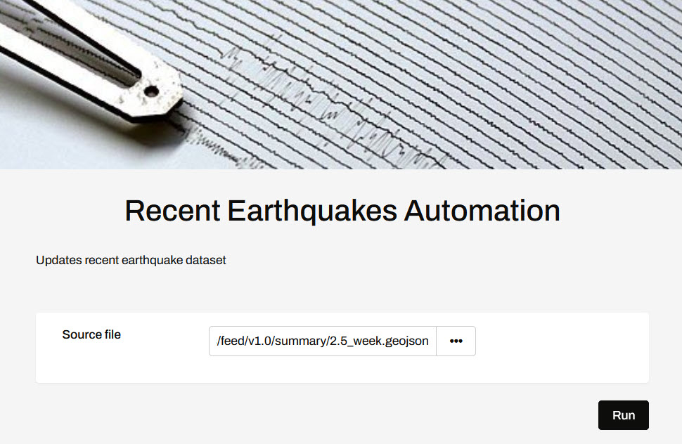
Click Run to trigger the automation.
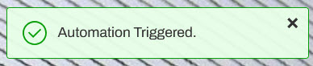
13) View Log
A moment after triggering the automation, navigate to Resources > Logs > Automations > current > action_fmelogaction.log file and see the logged message from the Log a Message action in the automation.
The Earthquake Automation was triggered from the earthquake-automation-app by admin.
You've now successfully configured an Automation to be run using an Automation App. In doing this, you created and linked Manual Parameters and used the expose parameter to send a value from the App to the Automation. Now, anyone can trigger the workflow from the Automation App at any time they wish to have the Earthquake data updated.